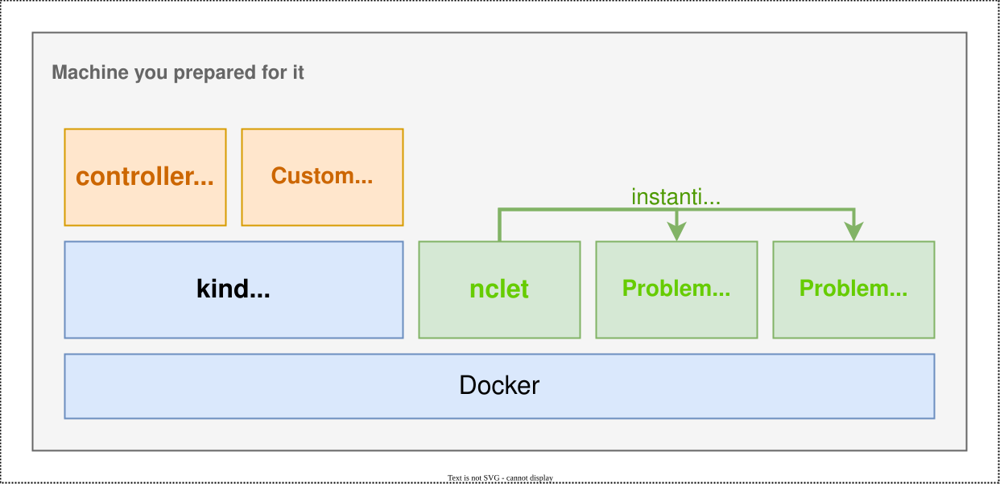

How to set up a development environment
This page describes how to set up a development environment like the following.

Prerequisites
- You need to prepare Linux VM (Ubuntu 22.04 is preferable)
- You need to install
build-essential.
Installing prerequisites
To set up a development environment, you need to install the following items:
- Golang
- Docker
- kind
- kubectl
Golang
All controllers in netcon-problem-management-subsystem are written in Golang. First, to develop controllers, you need to install Golang development environment.
wget https://go.dev/dl/go1.19.2.linux-amd64.tar.gz
sudo rm -rf /usr/local/go && sudo tar -C /usr/local -xzf go1.19.2.linux-amd64.tar.gz
echo 'export PATH=$PATH:/usr/local/go/bin' >> ~/.bashrc
. ~/.bashrc
Docker
In order to run Kubernetes cluster on your machine and run nclet, you need to install Docker.
curl -L https://get.docker.com | sudo sh
If you'd like to execute docker without sudo command, you can add your user to docker group.
sudo usermod -aG docker "$(id -un)"
kind
kind is a handy tool to run Kubernetes clusters on your local machine.
curl -Lo ./kind https://kind.sigs.k8s.io/dl/v0.16.0/kind-linux-amd64
chmod +x ./kind
sudo mv ./kind /usr/local/bin/kind
kubectl
Of course, to communicate with Kubernetes, you need to install kubectl.
curl -LO "https://storage.googleapis.com/kubernetes-release/release/$(curl -s https://storage.googleapis.com/kubernetes-release/release/stable.txt)/bin/linux/amd64/kubectl"
chmod +x kubectl && sudo mv kubectl /usr/local/bin
Deploying managers
First, you need to set up a Kubernetes cluster to run controllers.
kind create cluster
Next, you need to install cert-manager to generate and inject self-signed certificates for controller-manager.
kubectl apply -f https://github.com/cert-manager/cert-manager/releases/download/v1.9.1/cert-manager.yaml
Then, you can build and install managers with these commands.
git submodule update --init
make controller-manager-docker-build nclet-docker-build gateway-docker-build
make controller-manager-kind-push gateway-kind-push
Finally, you can deploy managers with this command.
make deploy
You can check the status of managers with kubectl -n netcon get pods.
$ kubectl -n netcon get pods
NAME READY STATUS RESTARTS AGE
netcon-controller-manager-6b49cb47fb-mn967 2/2 Running 0 9d
netcon-gateway-fdccf68c5-x9vpb 1/1 Running 0 7m
(optional) Setting up LoadBalancer
If you try managers which require external connectivity like Gateway, you need to set up LoadBalancer. First, you need to install MetalLB.
kubectl apply -f https://raw.githubusercontent.com/metallb/metallb/v0.13.7/config/manifests/metallb-native.yaml
Then, you need to configure MetalLB. You can configure MetalLB with helper script.
./scripts/generate_metallb_manifest.sh | kubectl apply -f -
Finally, you can create LoadBalancer freely.
$ cat service.yaml
apiVersion: v1
kind: Service
metadata:
namespace: netcon
name: gateway
spec:
type: LoadBalancer
selector:
control-plane: gateway
ports:
- port: 8082
targetPort: 8082
$ kubectl apply -f service.yaml
service/gateway created
$ kubectl -n netcon get svc
NAME TYPE CLUSTER-IP EXTERNAL-IP PORT(S) AGE
gateway LoadBalancer 10.96.196.144 172.18.0.200 8082:30483/TCP 11s
netcon-controller-manager-metrics-service ClusterIP 10.96.233.209 <none> 8443/TCP 17d
netcon-webhook-service ClusterIP 10.96.239.112 <none> 443/TCP 17d
$ curl 172.18.0.200:8082
Gateway for score server
ref: https://kind.sigs.k8s.io/docs/user/loadbalancer/
Deploying nclet
After deploying managers successfully, you can install nclet with these command. Note that workers can communicate with Kubernetes controll plane.
kind get kubeconfig > kubeconfig
sudo mkdir /data && sudo chmod 0777 ./data
./scripts/refresh_nclet.sh
Now, you can deploy ContainerLab environment with this system. To try it, apply ./config/samples/netcon_v1alpha1_problemenvironment.yaml.